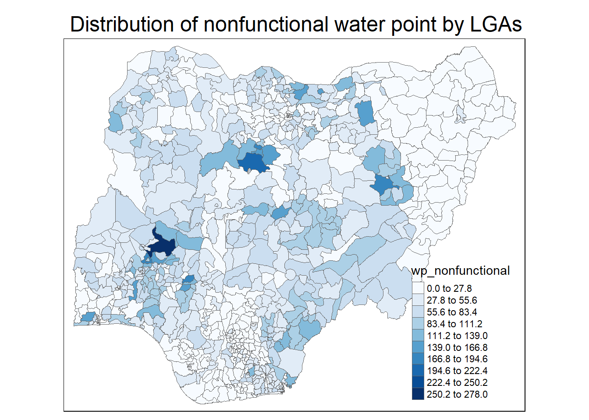
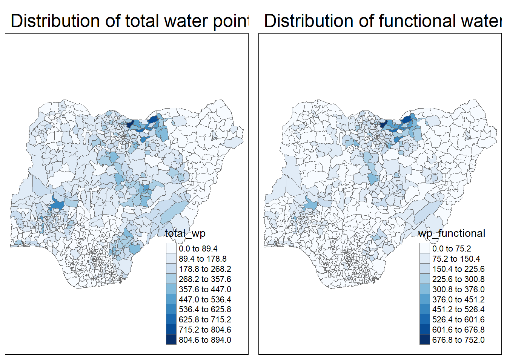
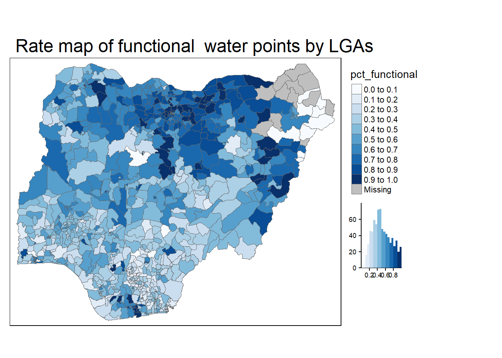
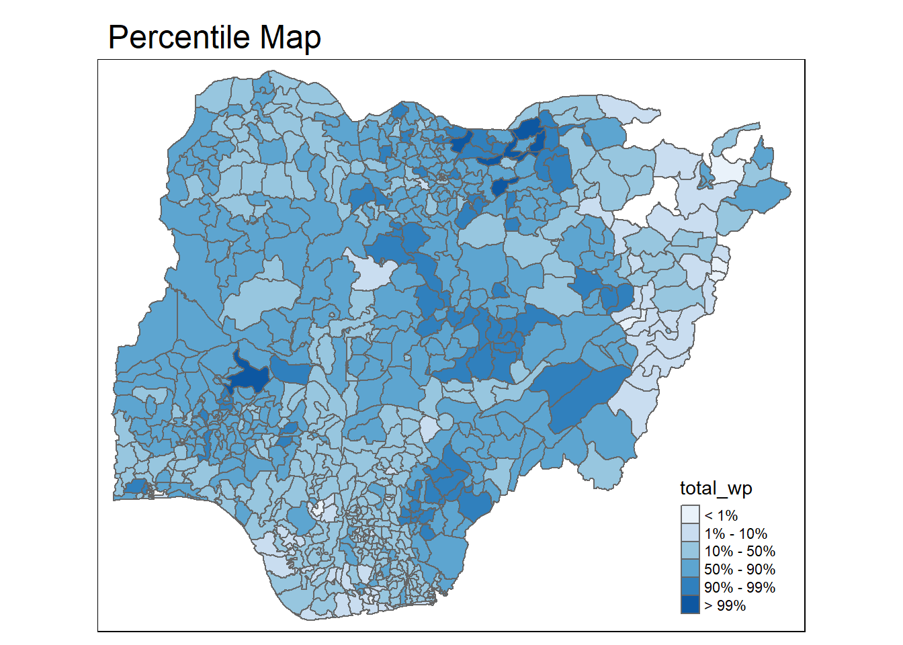
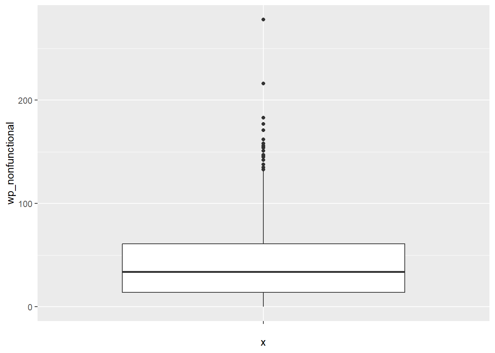
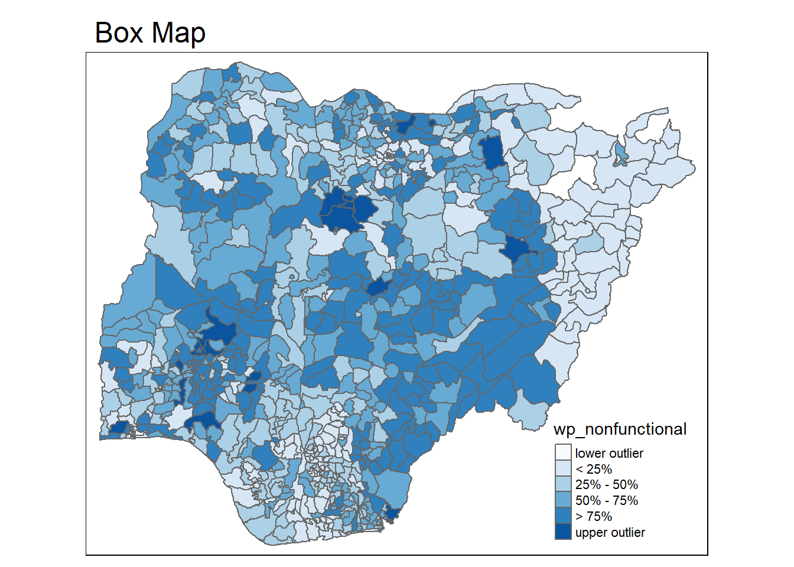

pacman::p_load(tidyverse, tmap, sf)In-class Exercise 3
1 Getting started
1.1 Installing & Loading Packages
1.2 Importing data
NGA_wp <- read_rds("data/rds/NGA_wp.rds")2 Basic Choropleth Mapping
2.1 Visualising distribution of non-functional water point
tm_shape(NGA_wp)+
tm_fill("wp_nonfunctional",
n = 10,
style="equal",
palette="Blues")+
tm_borders(lwd=0.1)+
tm_layout(main.title = "Distribution of nonfunctional water point by LGAs",
legend.outside = FALSE)
2.2 Class work and code
p1 <- tm_shape(NGA_wp) +
tm_fill("wp_functional",
n = 10,
style = "equal",
palette = "Blues") +
tm_borders(lwd = 0.1,
alpha = 1) +
tm_layout(main.title = "Distribution of functional water point by LGAs",
legend.outside = FALSE)p2 <- tm_shape(NGA_wp) +
tm_fill("total_wp",
n = 10,
style = "equal",
palette = "Blues") +
tm_borders(lwd = 0.1,
alpha = 1) +
tm_layout(main.title = "Distribution of total water point by LGAs",
legend.outside = FALSE)tmap_arrange(p2, p1, nrow = 1)
3 Choropleth Map for Rates
3.1 Deriving Proportion of Functional and Non-functional Water Points
NGA_wp = NGA_wp %>%
mutate(pct_functional = wp_functional / total_wp) %>%
mutate(pct_nonfunctional = wp_nonfunctional / total_wp)3.2 Plotting Map of Rates
tm_shape(NGA_wp) +
tm_fill("pct_functional",
n = 10,
style = "equal",
palette = "Blues",
legend.hist = TRUE) +
tm_borders(lwd = 0.1,
alpha = 1) +
tm_layout(main.title = "Rate map of functional water points by LGAs",
legend.outside = TRUE)
4 Extreme Value Maps
4.1 Percentile Map
4.1.1 Data Preparation
NGA_wp = NGA_wp %>%
drop_na()percent <- c(0,.01,.1,.5,.9,.99,1)
var <- NGA_wp["pct_functional"] %>%
st_set_geometry(NULL)
quantile(var[,1], percent) 0% 1% 10% 50% 90% 99% 100%
0.0000000 0.0000000 0.2169811 0.4791667 0.8611111 1.0000000 1.0000000 4.1.2 Creating the get.var() function
get.var <- function(vname,df) {
v <- df[vname] %>%
st_set_geometry(NULL)
v <- unname(v[,1])
return(v)
}4.1.3 A percentile mapping function
percentmap <- function(vnam, df, legtitle=NA, mtitle="Percentile Map"){
percent <- c(0,.01,.1,.5,.9,.99,1)
var <- get.var(vnam, df)
bperc <- quantile(var, percent)
tm_shape(df) +
tm_polygons() +
tm_shape(df) +
tm_fill(vnam,
title=legtitle,
breaks=bperc,
palette="Blues",
labels=c("< 1%", "1% - 10%", "10% - 50%", "50% - 90%", "90% - 99%", "> 99%")) +
tm_borders() +
tm_layout(main.title = mtitle,
title.position = c("right","bottom"))
}4.1.4 Test drive the percentile mapping function
percentmap("total_wp", NGA_wp)
4.2 Box map
ggplot(data = NGA_wp,
aes(x = "",
y = wp_nonfunctional)) +
geom_boxplot()
4.2.1 Creating the boxbreaks function
boxbreaks <- function(v,mult=1.5) {
qv <- unname(quantile(v))
iqr <- qv[4] - qv[2]
upfence <- qv[4] + mult * iqr
lofence <- qv[2] - mult * iqr
# initialize break points vector
bb <- vector(mode="numeric",length=7)
# logic for lower and upper fences
if (lofence < qv[1]) { # no lower outliers
bb[1] <- lofence
bb[2] <- floor(qv[1])
} else {
bb[2] <- lofence
bb[1] <- qv[1]
}
if (upfence > qv[5]) { # no upper outliers
bb[7] <- upfence
bb[6] <- ceiling(qv[5])
} else {
bb[6] <- upfence
bb[7] <- qv[5]
}
bb[3:5] <- qv[2:4]
return(bb)
}4.2.2 Test drive the newly created function
var <- get.var("wp_nonfunctional", NGA_wp)
boxbreaks(var)[1] -56.5 0.0 14.0 34.0 61.0 131.5 278.04.2.3 Boxmap function
boxmap <- function(vnam, df,
legtitle=NA,
mtitle="Box Map",
mult=1.5){
var <- get.var(vnam,df)
bb <- boxbreaks(var)
tm_shape(df) +
tm_polygons() +
tm_shape(df) +
tm_fill(vnam,title=legtitle,
breaks=bb,
palette="Blues",
labels = c("lower outlier",
"< 25%",
"25% - 50%",
"50% - 75%",
"> 75%",
"upper outlier")) +
tm_borders() +
tm_layout(main.title = mtitle,
title.position = c("left",
"top"))
}tmap_mode("plot")
boxmap("wp_nonfunctional", NGA_wp)
4.2.4 Recode NA values to zero
NGA_wp <- NGA_wp %>%
mutate(wp_functional = na_if(
total_wp, total_wp < 0))